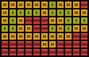

Vzdálenostní analýzy
Ve cvičení se naučíte
-
že "jak daleko od sebe" znamená mnohem více než počet kilometrů mezi místy na mapě
-
jak lze analýzou vzdáleností vytvořit sofistikovanější modely blízkých a vzdálených míst
-
jak aplikovat koncepty analýzy vzdáleností k zodpovězení reálných otázek týkajících se pohybu v krajině
Základní pojmy
Použité datové podklady
Náplň cvičení
Vzdálenostní analýza pomáhá zodpovědět základní otázku týkající se geografických dat: Jak daleko jsou od sebe různá místa?
"Jak daleko" ovšem může znamenat víc než jen vzdálenost (počet kilometrů mezi body). Analýza může také zohlednit ujetou povrchovou vzdálenost, nutnost obejít překážky a náročnost terénu. Je vhodná v situacích, kdy je třeba modelovat pohyb po krajině. Jedná se o analýzu rastrovou.
Pro analýzy vzdálenosti lze použít tři základní metody:
{kind=link}
Distance Accumulation
Každému pixelu přiřazuje hodnotu obtížnosti (součet nákladů) dosažení (jednoho) zdrojového bodu.
například oblast potenciální polohy ztraceného člověka v čase od poslední známé polohy
{kind=link}
Distance Allocation
Každému pixelu přiřazuje zdrojový bod, ke kterému vede nejsnadnější cesta (dle součtu nákladů).
například přiřazení nejbližšího záchranného zařízení, nebo mapování zvířecích teritorií
{kind=link}
Path Generation
Generuje cestu s nejnižšími náklady mezi dvěma (a více) body.
například pohyb zvířat mezi zdroji potravy, nebo stavba cesty v krajině
Faktory ovlivňující analýzu (vstupní data)
-
Pozice zdroje (1 a více)
Body (pixely), z jejichž pozic probíhá výpočet
-
Překážky (Barriers)
Struktury blokující cestu, neumožňují průchod
například zdi, řeky, dálnice, státní hranice apod.
-
Povrchová vzdálenost (Surface Distance)
Započítává nerovnosti povrchu Země (reliéf), cesta je pak delší než přímá spojnice.
-
Náklady (Cost, Friction)
Rozlišuje prostupnost rastru ve smyslu nákladů
například Land Cover, sklonitost terénu nebo nadm. výška, ale i cena výkupu pozemků, cena za překročení hranice.

Poznámka
U těchto rastrových analýz nelze při výpočtu rozlišovat směr pohybu (např. nahoru a dolů). Náklady se přičítají shodně s překročením pixelu v jakémkoli směru.
Při výběru konkrétních nákladů je vždy nutné správně vyhodnotit jednotlivé faktory. Vliv jednotlivých faktorů se může případ od případu výrazně lišit.
například:
- Bariéra pro člověka nemusí znamenat bariéru pro zvíře
- Les pohyb člověka zpomaluje, ale zvířata ho mohou naopak preferovat
- Povrchová vzdálenost se nemusí vztahovat na ptáky nebo letadla
Jednotlivé faktory mohou mít v analýze také odlišnou váhu, viz níže.
Zadání domácího úkolu k semestrální práci
Zdroje
https://www.esri.com/training/catalog/61d4dddd118ffc20ea87afa5/distance-analysis-essentials/
Network Datasety:
https://www.esri.com/training/catalog/64c94671e9b24307fd5db5ca/configure-a-network-dataset-in-arcgis-pro/
https://www.esri.com/training/catalog/57672875eeae7ade2869a2f1/finding-the-best-paths/
https://pro.arcgis.com/en/pro-app/latest/tool-reference/spatial-analyst/account-for-surface-in-distance-calculations.htm
https://pro.arcgis.com/en/pro-app/latest/tool-reference/spatial-analyst/distance-analysis.htm
https://pro.arcgis.com/en/pro-app/latest/tool-reference/spatial-analyst/creating-a-cost-surface-raster.htm
https://pro.arcgis.com/en/pro-app/latest/tool-reference/spatial-analyst/understanding-cost-distance-analysis.htm